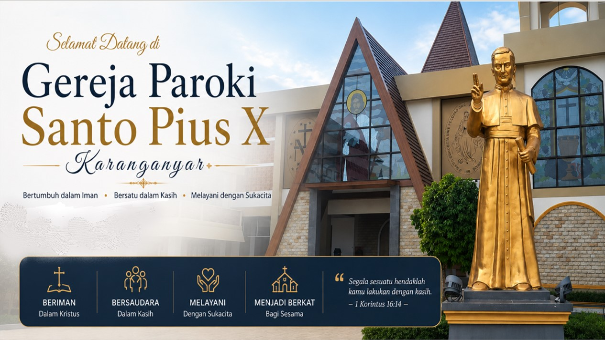

Paroki Santo Pius X
Karanganyar
Karanganyar

Perayaan Misa Malam Natal bersama seluruh umat paroki dengan penuh sukacita.
Sakramen Baptis bagi putra-putri umat di Paroki Santo Pius X.
Pertemuan Orang Muda Katolik dalam membangun kebersamaan dan iman.
Pembagian sembako kepada warga sekitar sebagai wujud kasih dan kepedulian.
Pertemuan Orang Muda Katolik Pemilihan Kepenguruan Baru
Selamat datang di Sekretariat Paroki St. PIUS X Karanganar. Silahkan chat untuk informasi lebih lanjut. 🏠👋
Open Chat